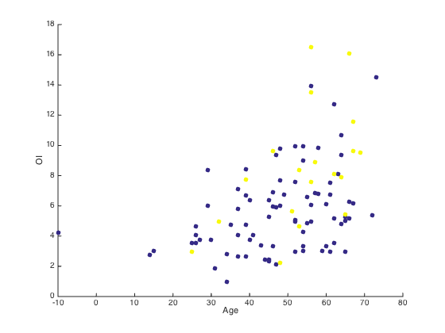
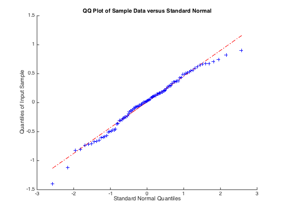
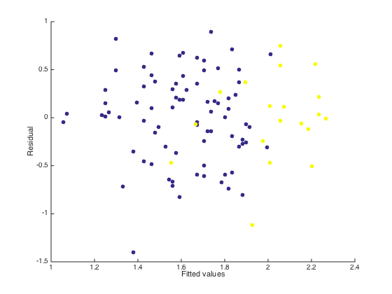
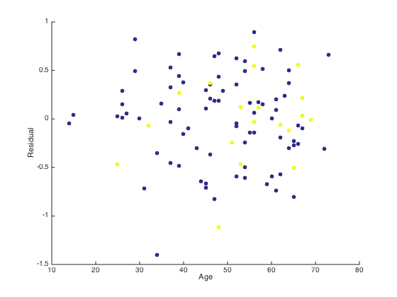
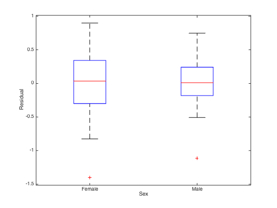

data = readtable('../data/regression.csv');
data.Sex = categorical(data.Sex);
figure;
scatter(data.Age, data.OI, [], data.Sex, 'filled');
xlabel('Age');
ylabel('OI');
data = data(data.Age > 0, :);
data.logOI = log(data.OI);
model = fitlm(data, 'logOI ~ Age + Sex')
figure;
qqplot(model.Residuals.Raw);
figure;
scatter(model.Fitted, model.Residuals.Raw, [], data.Sex, 'filled');
xlabel('Fitted values');
ylabel('Residual');
figure;
scatter(data.Age, model.Residuals.Raw, [], data.Sex, 'filled');
xlabel('Age');
ylabel('Residual');
figure;
boxplot(model.Residuals.Raw, data.Sex)
xlabel('Sex');
ylabel('Residual');
model =
Linear regression model:
logOI ~ 1 + Age + Sex
Estimated Coefficients:
Estimate SE tStat pValue
________ _________ ______ __________
(Intercept) 0.8292 0.17771 4.6661 9.8341e-06
Age 0.016208 0.0035215 4.6027 1.2637e-05
Sex_Male 0.3189 0.11568 2.7567 0.0069774
Number of observations: 100, Error degrees of freedom: 97
Root Mean Squared Error: 0.455
R-squared: 0.262, Adjusted R-Squared 0.247
F-statistic vs. constant model: 17.2, p-value = 3.96e-07
    